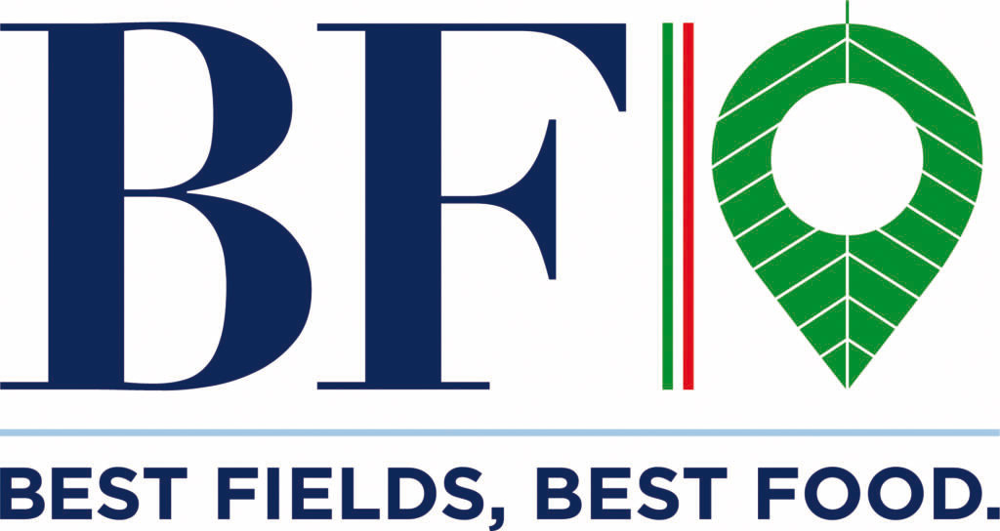
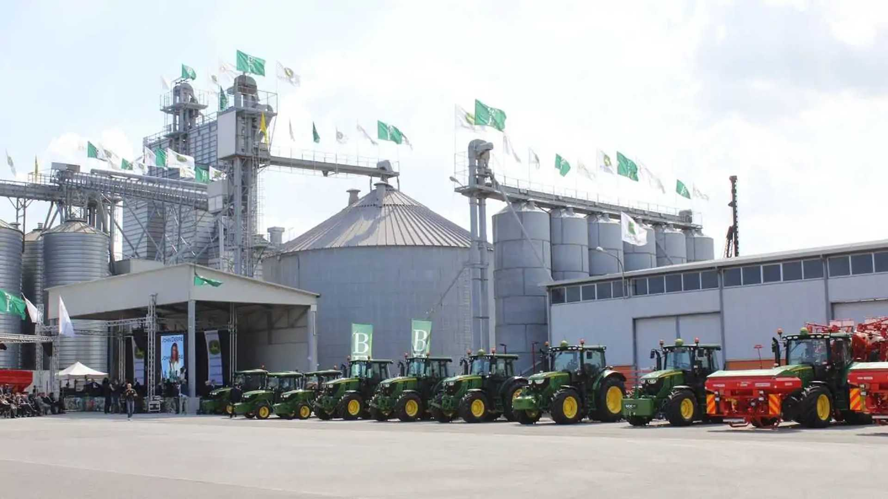
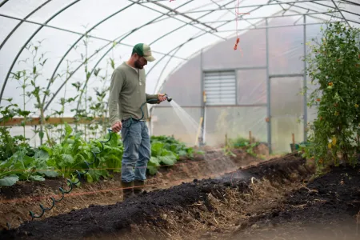
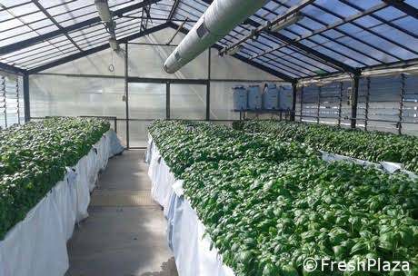

Rispetto per ogni goccia d'acqua.
Implementiamo tecnologie per ridurre al minimo l'impronta idrica delle nostre coltivazioni e incrementare l'autoproduzione energetica da fonti rinnovabili.
Agricoltura di precisione · Risparmio Idrico · Rinnovabili
Scopri come un modello agricolo moderno combina qualità, responsabilità ambientale e valore per il territorio.

Scopri l'origine dei nostri prodotti, l'innovazione nei campi e l'impegno per un'agricoltura 100% italiana a basso impatto ambientale.
Consulta il bilancio di sostenibilità, i dati ESG e i principali indicatori di performance della filiera.
La storia agricola italiana incontra l'agricoltura di precisione per offrirti prodotti sani ed etici.
Il Gruppo BF S.p.A. nasce intorno a Bonifiche Ferraresi, gestendo ad oggi oltre 7.750 ettari di terreno che rappresentano un patrimonio nazionale.
Non ci limitiamo a coltivare: impieghiamo sistemi avanzati per abbattere i consumi idrici e chimici, trasformando un modello tradizionale in un ecosistema sostenibile.

Terra, competenza e innovazione.Il Gruppo BF mette in relazione terra, persone e competenze per costruire un modello agricolo più consapevole e certificato.
Mantenere l'intera filiera sul territorio nazionale significa sostenere l'occupazione locale e assicurare standard qualitativi d'eccellenza che partono dal campo.
Raccogliamo dati millimetrici in tempo reale. Questo abbatte drasticamente il nostro impatto ambientale, ottimizzando le rese senza impoverire i terreni.
Non facciamo promesse, mostriamo dati. I nostri report e certificazioni sono accessibili a tutti, per farti scegliere in modo realmente consapevole.
Una responsabilità concreta: custodire il patrimonio agricolo nazionale e proteggerlo per le generazioni future.
Tre responsabilità che guidano il modo in cui lavoriamo ogni giorno nei nostri campi.
Implementiamo tecnologie per ridurre al minimo l'impronta idrica delle nostre coltivazioni e incrementare l'autoproduzione energetica da fonti rinnovabili.
Azzeriamo quasi del tutto la necessità di trattamenti fitosanitari e chimici, restituendoti un alimento sano che rispetta te e il terreno in cui è cresciuto.
Assicuriamo condizioni di lavoro sicure e dignitose lungo tutta la catena, estendendo il nostro rigoroso Codice di Condotta a ogni singolo fornitore della filiera.
Un tracciamento trasparente e interattivo per raccontarti ogni passo del nostro cibo.
Scansionando il QR Code sui nostri packaging, puoi accedere direttamente alla storia di ciò che stai per mangiare.
Ogni singola fase, dalla semina fino all'arrivo nel punto vendita, viene registrata digitalmente per assicurarti che il prodotto sia sicuro, etico e totalmente italiano.

Tracciabilità, QR Code, Qualità.Seleziona una fase per scoprire i nostri standard qualitativi.
Scegliamo e certifichiamo sementi di altissima qualità che richiedano meno acqua e si adattino in modo naturale alle caratteristiche del suolo italiano.
Attraverso l'agricoltura di precisione, monitoriamo costantemente la salute delle piante, assicurando un bassissimo impatto ambientale e zero sprechi.
Manteniamo il controllo diretto anche nei processi di prima e seconda lavorazione, valorizzando le proprietà nutritive del raccolto con lavorazioni delicate.
Ti garantiamo la tracciabilità assoluta: dalla mappa del campo in cui è stato coltivato fino agli scaffali del supermercato. Tutto a portata di smartphone.
Dalle sementi alle nostre eccellenze alimentari, uniche per provenienza e trasparenza.
La nostra garanzia di origine: selezioniamo geneticamente il punto di partenza ideale per assicurarti raccolti sani, resistenti e di qualità superiore.
Coltivato nelle nostre tenute con tecniche di ottimizzazione idrica all'avanguardia per offrirti un chicco perfetto senza impoverire le falde acquifere.
Eccellenti dal punto di vista nutrizionale e fondamentali per l'ecosistema: arricchiscono il terreno in modo naturale rispettando i cicli di rotazione.
Coltiviamo il benessere sfruttando la preziosa biodiversità dei nostri territori, offrendo erbe aromatiche e officinali tracciate con la massima trasparenza.

Area riservata Partner B2B - Monitoraggio Risorse e Indicatori
7.750 ha
Maggiore azienda agricola italiana100%
Dal seme allo scaffaleGRI
Bilancio ESG VerificatoI grafici sottostanti sintetizzano le performance agro-industriali in ottica di sostenibilità integrata, conformemente alla DNF ufficiale di BF S.p.A.
Risultati 2023 basati sui fornitori rilevanti della filiera agricola e alimentare:
Scarica i documenti fondamentali per la conformità aziendale.